2023 · 직접 시험 · 균열·하중 응답 분석
Texas Overlay Test
교면포장 재료는 반복 변위에 어떻게 반응하는가?
고덕토평대교와 포장재료 평가
고덕토평대교는 한강을 가로질러 서울 강동구 고덕동과 경기 구리시 토평동을 연결하는 2주탑 콘크리트 사장교입니다. 이 페이지는 교면 포장재료의 균열 거동을 평가하기 위해 수행한 시편 제작, Texas Overlay 시험, 관찰·분석 및 보고서 작성 경험을 정리합니다.
2025년 개통 당시 주경간 540m(두 주탑 사이 거리)로 세계 최장인 콘크리트 사장교로 소개되었습니다.
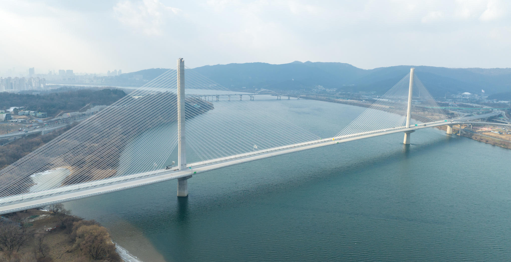
고덕토평대교 전경
한강을 가로지르는 고덕토평대교의 전경입니다.
한국도로공사가 사업을 시행하고 현대건설이 시공한 세종–포천고속도로 안성–구리 제14공구의 교량입니다.
연구 목적
매스틱 아스팔트 교면 포장재료의 반복 변위에 따른 균열 거동을 살펴본 평가입니다. LMC 기준 시편과 3개 공급사의 매스틱 아스팔트 시편을 비교했습니다. 본인의 참여 범위는 포장재료의 실험실 평가와 결과 문서화입니다.
본인 기여
- 라텍스 개질 콘크리트(LMC) 비교군과 3개 업체의 매스틱 아스팔트 시편을 제작했습니다.
- 미국 텍사스주 교통국(TxDOT) Overlay 시험을 직접 수행했습니다.
- 하중–반복횟수 응답과 관찰된 균열 진전을 분석하고 기술보고서에 정리했습니다.
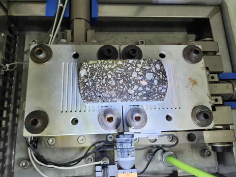
Texas Overlay 시편 장착
Texas Overlay 시험 장치의 분할 재하판 위에 장착한 혼합물 시편.
방법과 연구 과정
- 014개 재료군
- 02반복 변위 시험
- 03하중·균열 해석
직접 시편을 준비하고 반복 변위 시험을 수행했습니다. 하중–사이클 응답과 시편 표면의 균열 관찰을 함께 검토하여 기술보고서에 정리했습니다. 아래 준비·장착 사진은 여러 작업일의 기록이며, 모두 결과에 제시된 C 시편 1차와 같은 시편을 뜻하지 않습니다.
시편 준비와 시험판 접착
직사각형 시편을 시험판에 부착한 뒤 장비에 설치했습니다. 여기의 에폭시는 시편과 판을 붙이는 접착용 재료이며, 혼합물 제조용 바인더와 구분합니다.

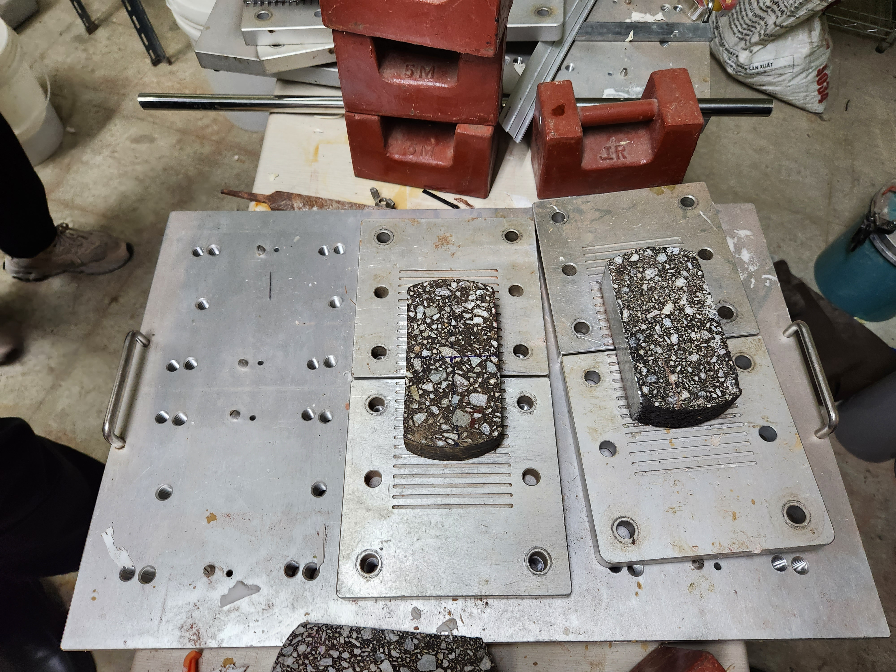
직사각형 시편과 시험판 준비
혼합물 시편과 분할 시험판을 준비한 모습입니다. 시편의 배합·치수나 개별 식별번호를 사진만으로 특정하지 않습니다.

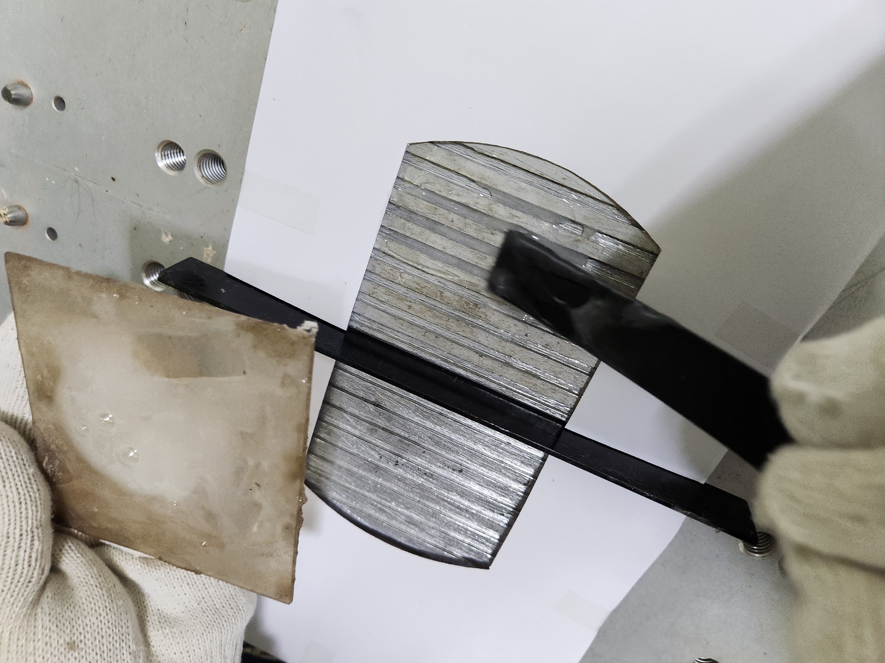
접착제 도포
장갑을 끼고 시편 부착용 접착제를 금속 시험판에 바르는 단계입니다.

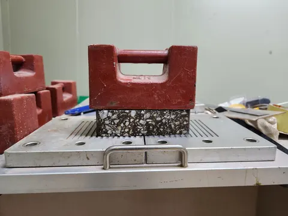
누름돌을 이용한 접착
보고서가 설명하는 접착용 하중추를 시편 위에 올린 상태입니다. 접착제 도포 후의 준비 단계이며 시험의 반복 재하 하중을 뜻하지 않습니다.
시험장비·시편 장착·볼트 체결
장비 전체에서 시편 장착부와 관찰 장치로 시선을 옮기며 시험 구성을 확인할 수 있습니다.

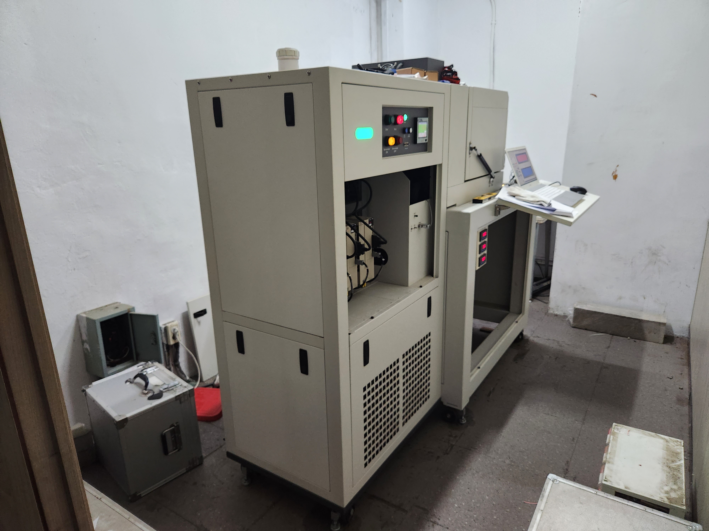
Texas Overlay 시험장비 전체
시험 캐비닛과 제어용 컴퓨터가 함께 보이는 장비 구성입니다.

분할 재하판에 시편 장착
양쪽 재하판에 걸쳐 장착한 혼합물 시편입니다.

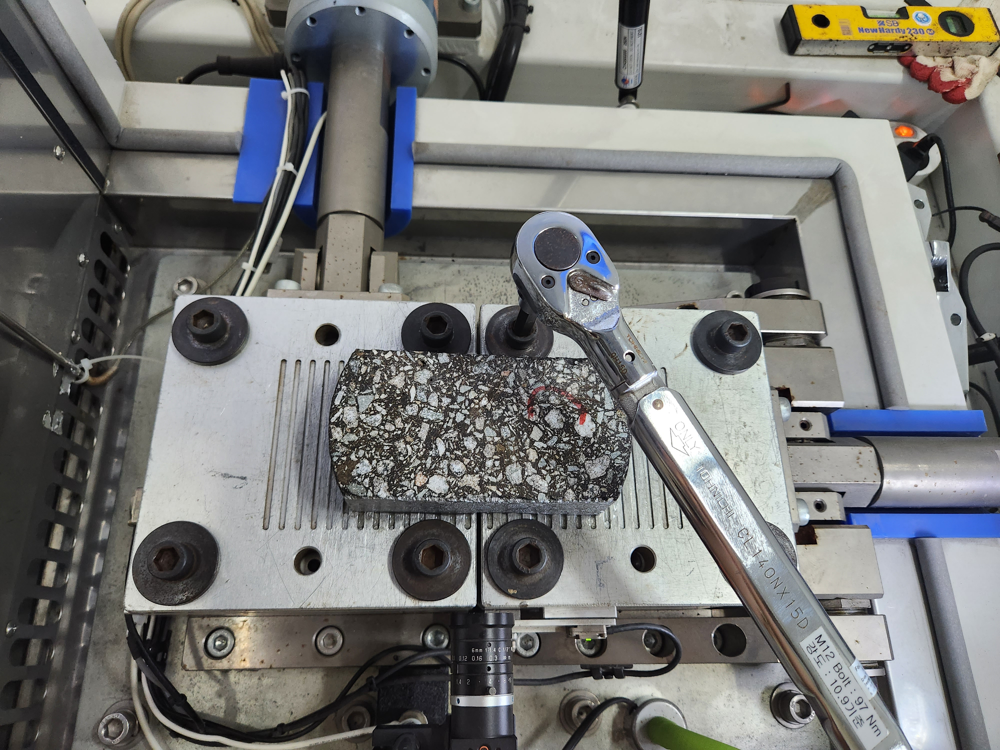
장착판 볼트 체결
렌치를 이용해 장착판의 볼트를 체결하는 단계입니다. 사진에 보이는 장비 표기를 실제 적용 토크로 해석하지 않습니다.

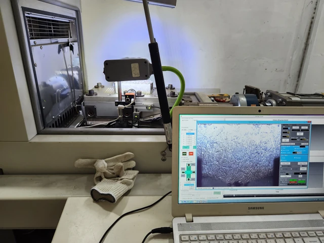
관찰 카메라와 모니터링 구성
장착 시편, 관찰 카메라와 화면의 연결을 보여주는 사진입니다. 이 정지사진의 장비 화면은 정지 상태입니다.
실제 시험 진행과 시편 관찰
시험 진행 영상의 대표 정지화면을 장착·체결 뒤에 배치했습니다. 아래 시편 측면 사진은 별도 관찰 기록으로, 특정 사이클의 C 시편과 직접 연결하지 않습니다.

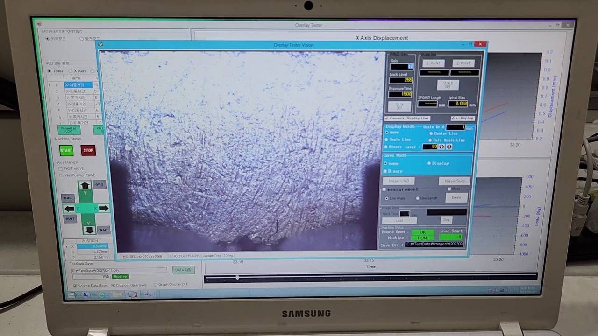
시험 진행 영상의 정지화면
시험 영상에서 추출한 화면으로, 관찰 프로그램에 RUN 상태가 표시됩니다. 배경 장비 그래프는 시간에 따른 응답이며 아래 하중–사이클 그래프와 구분합니다.

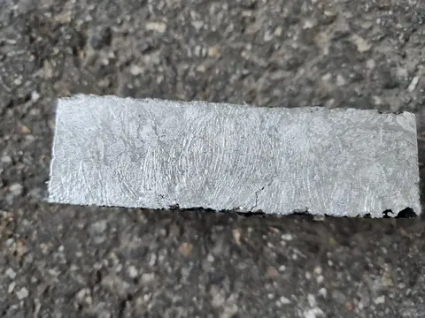
시험 후 시편 측면 관찰
시편 측면 하단에서 시작된 균열을 관찰한 기록입니다. 이 사진에 임의의 사이클 번호를 붙이지 않습니다.
시험 결과와 하중–사이클 그래프
보고서에 수록된 C 시편 1차 그래프를 바탕으로 반복 시험 중 하중 응답의 변화를 검토했습니다. 그림의 가로축은 Cycle, 세로축은 Maximum Load입니다.

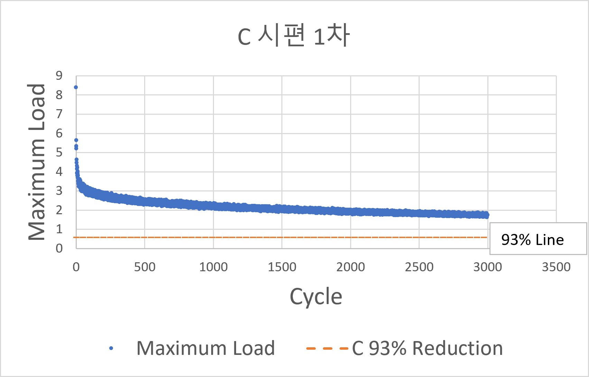
C 시편 1차 · 보고서 그래프
원본 발표자료에서 추출한 하중–사이클 그래프입니다. 원본 그림에 하중 단위가 없어 N 또는 kN 등의 단위를 추가하지 않았습니다.
C 시편 1차 · 초기·중기·후기 균열 관찰
동일 보고서에서 C 시편 1차의 관찰 순서로 제시한 세 장입니다. 초기·중기·후기는 보고서의 표기를 따르며, 정확한 사이클이나 수명 비율을 뜻하지 않습니다.

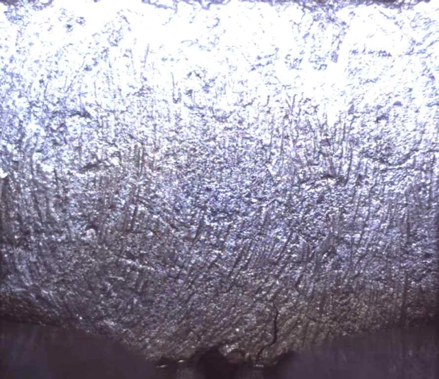
초기 관찰
보고서의 C 시편 1차 초기 표면 관찰 사진입니다.

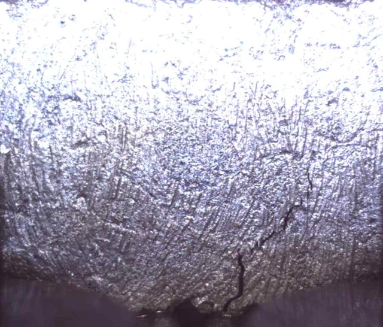
중기 관찰
같은 시험의 중기 표면 관찰 사진입니다.

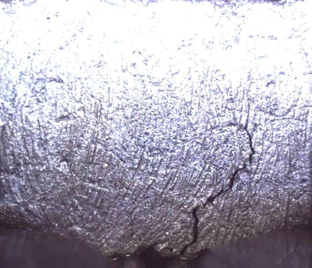
후기 관찰
같은 시험의 후기 표면 관찰 사진입니다. 그래프의 특정 점과 사진을 임의로 대응시키지 않습니다.
연구 기여와 결과물
Overlay 시험을 직접 수행하고 하중–반복횟수 응답과 균열 진전을 함께 분석하여 과제 기술보고서로 정리했습니다.